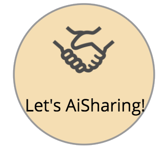

<ion-header>
  <ion-toolbar color="header">
    <ion-buttons slot="start">
      <ion-button (click)="onCancel()">
        <ion-icon name="arrow-round-back"></ion-icon>
      </ion-button>
    </ion-buttons>
  
    <ion-title>周辺の相乗り</ion-title>

  </ion-toolbar>
</ion-header>

<ion-content>
  <ng-container *ngIf="reservations.length !== 0; else nonReservations">
    <!-- <ng-container *ngFor="let reservation of reservations; trackBy: trackFn"> -->
    <ng-container *ngFor="let reservation of reservations;">
      <reservation-card [reservation]='reservation'></reservation-card>
    </ng-container>
  </ng-container>

  <ng-template #nonReservations>
    <div class="none_reservations">
      <p>投稿がありません</p>
      <!-- <p>
        
        を押して投稿してみましょう
      </p> -->
    </div>
  </ng-template>
</ion-content>
